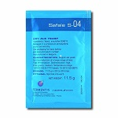
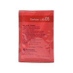
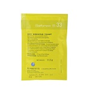
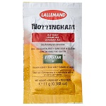
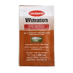
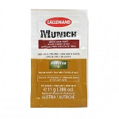
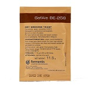
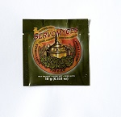

Safale S-04
T óptima de uso (°C): 17 a 23. Floculación: Rápida. Atenuación: Media. Aroma: Frutal a neutra. Tolerancia al alcohol: Media. Estilos: Kolsh, ales, pale, ambar y brown, double, scotch, porter, stout. Presentación: x11grs - x500grs
Safale US-05
T óptima de uso (°C): 15 a 24. Floculación: Rápida. Atenuación: Alta. Aroma: Especiada. Tolerancia al alcohol: Media. Estilos: Kolsh, ipa, triple, bitter, pale ale, ambar, brown, imperial stout. Presentación: x11grs - x500grs r, Classic Stout.
Safale S-33
T óptima de uso (°C): 17 a 23. Floculación: Media. Atenuación: Baja. Aroma: Floral. Tolerancia al alcohol: Media. Estilos: Triple, bitter, double, scotch, barley wine, stout. Presentación: x11grs - x500grs.
Lallemand Nottingham
T óptima de uso (°C): 10 a 23. Floculación: Rápida. Atenuación: Alta. Aroma: Neutral. Tolerancia al alcohol: 11%. Estilos: Mild ale, ale golden y blond, kolsh, bitter, ales pale ambar red y brown, ipa, altbier, strong ale, barley wine, imperial stout, bock, vienna, schwartzbier, lager, pilsen. Presentación: x11grs - x500grs r, Classic Stout.
Lallemand Windsor
T óptima de uso (°C): 15 a 22. Floculación: Baja. Atenuación: Media. Aroma: Frutal. Tolerancia al alcohol: 7%. Estilos: Mild ale, cream ale, american style, hefeweizen, ale pale brown, ambar red, scottish ale, sweet stout y cream stout. Presentación: x11grs - x500grs r, Classic Stout.
Lallemand Munich
T óptima de uso (°C): 17 a 22. Floculación: Baja. Atenuación: Alta. Aroma: Fenólica y suave frutal. Tolerancia al alcohol: 7%. Estilos: Weizen, hefeweizen, dunkelweizen, wit bier, belgian triples, belgian blond. Presentación: x11grs - x500grs.
BE-256
T óptima de uso (°C): 15 A 24. Floculación: Rápida. Atenuación: Alta. Aroma: Frutal y floral. Tolerancia al alcohol: Alta. Estilos: Ipa, triple, ales pale, ambar, brown, porter. Presentación: x11grs - x500grs.
Servomyces

Nutriente para levaduras, se agrega en los últimos 10 minutos de hervor del mosto. Dosis de 1 a 2 grs cada 100 lts de mosto.
Presentación: x11grs - x500grs.